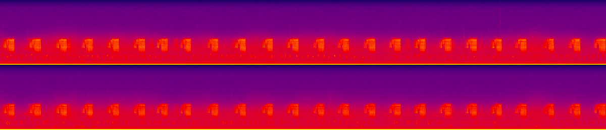

Overview
The TrillR package was originally developed as a few functions to assist in the random selection of wildlife accoustic recordings for species identification. This package has grown and is now part of a workflow for the selection of these recordings with the exclusion of bad weather days.
This package is largely dependent on using SoX - Sound eXchange which can be downloaded here: https://sourceforge.net/projects/sox/files/sox/.
For additional improved functionality you can also use the accompanied TrillR App to increase the speed of selecting recordings. The latest release can be found here: https://github.com/deanrobertevans/TrillRApp/releases.
Installation
The development version of the TrillR package can be downloaded in R.
# install.packages("devtools")
devtools::install_github("deanrobertevans/TrillR")Usage
library(TrillR)Set Location of sox.exe
Many of the functions in this package rely on SoX and therefore the location of the sox.exe file must be defined in R before doing any recording selection.
To set the location use the setsox.exe() function. You can specify a file path within the function or if it is left blank a file dialog will appear where you can choose the location.
#Example
setsox.exe("Path/sox.exe")Getting .wav Data
It is recommended that you set your working directory to the location of all of your recordings. Then to read in the .wav data use the get.wavs() function.
This function is dependent on a standardized file structure where each location has its own folder of recordings. For example the sampling location LV-01-01-01 would have a folder named after this location conaining all recordings. Furthermore, the recording files must also be named using a standardized format that contains the location, date, and time seperated by underscore:
location_date_time.wav
Using the above location as another example a recording file name would look like this:
LV-01-01-01_20170609_033500.wav
As long as the required structure above is met then you can read in the data. By default wavs will be searched for in the working directory but a different directory can be specified. Start dates and end dates can also be specified to remove any recordings that may not be of interest. Lastly, you can specify if you want to get the file duration of each file when reading in your wav data. This is optional because it can be quite time consuming but it can also be useful to remove any recordings that may not be long enough for selection.
data <- get.wavs(directory=getwd(), start.date = "2017-06-01", end.date = "2017-06-30", getDuration=T)Your data should look something like this:
| file.path | basename | location | datetime | JDay | file.duration |
|---|---|---|---|---|---|
| C:/Users/deane/Desktop/TrillR/Test/LV-01-01-01/LV-01-01-01_20170609_033500.wav | LV-01-01-01_20170609_033500 | LV-01-01-01 | 2017-06-09 3:35 | 160 | 600 |
| C:/Users/deane/Desktop/TrillR/Test/LV-01-01-01/LV-01-01-01_20170609_035100.wav | LV-01-01-01_20170609_035100 | LV-01-01-01 | 2017-06-09 3:51 | 160 | 600 |
Merging Location Data
Coordinates for each location can be used to calculate things such as sunrise and sunset. In order to non destructively merge coordinates to your recording data use the mergelocations() function. This function provides checks and warns you of any missing locations before merging your data.
library(readxl)
locationdata <- read_excel("LV.xlsx")
data <- mergelocations(data, locationdata, locationname = "Location", Latitude="Latitude", Longitude="Longitude")Calculating Sun Times
Using specific sun times can be really important for determining species presence in acoustic recordings. Building off of the getSunlightTimes() function from the suncalc R package, the TrillR function getSunCalcs() adds the ability to calculate any of times of importance and append a column for those times to your recording dataset.
Available sun time calculations are: solarNoon, sunrise, sunset, sunriseEnd, sunsetStart, nightEnd, and goldenHourEnd. See the suncalc package for more details. Latitude and Longitude must be existings columns in order to use getSunCalcs(). In addition, support for parallel processing for getSunCalcs() has been added for increased speed when dealing with many recordings.
data <- getSunCalcs(data, calc = c("sunrise","sunset"), doParallel=T)Assigning Categories
Assigning recordings into specific categories based on their times is an important step in recording selection. This is where the categorize() function comes in to assign a category based on inclusive start and end dates/times. This function works on its own or with dplyr for added functionality.
Start and end dates can be in four formats: integer yday, character (“YYYY-MM-DD”), date format, or POSIXct.
Start and end times can be in three formats: character (“HH:MM:SS”), hms format, or POSIXct.
data <- categorize(data,"EN","2017-06-01","2017-06-15","22:00:00","01:00:00")
#or use dplyr and calculate fields
data <- data %>% dplyr::group_by(location) %>% dplyr::mutate(start.date=min(JDay),end.date=ceiling(mean(c(max(JDay),min(JDay)))),start.time=as_hms(sunset-3600),end.time=as_hms(sunset+3600)) %>%
categorize("EN",start.date,end.date,start.time,end.time)Creating Spectrograms
Until better and faster methods for automatic bad weather detection in acoustic recordings are developed, manual interpretation of spectrograms is the best option for filtering out recordings that are not suitable for interpretation. There are two functions in the TrillR package for generating spectrograms. First is the sox.spectrogram() function which generates one spectrogram based on a file file path to the recording you would like to create a spectrogram for. This function will save the resulting png anywhere you want if supplied with a folder path or by default in a created spectrogram folder in your working directory.
Passable options include a list for duration with start and end times in seconds and size (x and y) for manipulating how the spectrogram looks.
sox.spectrogram(file.path="C:/Users/deane/Desktop/TrillR/Test/LV-01-01-01/LV-01-01-01_20170609_033500.wav", out.path = file.path(getwd(),"Spectrograms"), size = list(x = 2000, y = 1000), duration = list(start = 0, end = 180))Example of a default spectrogram:

Alternatively, you can generate many spectrograms using the the sox.spectrograms() function. This function differs from the above function in that it uses a recording selection data.frame to generate multiple spectrograms. So for example if you take a random sample of recordings for each location and category you have specified you can pass this data.frame to sox.spectrograms() and it will create all your spectrograms for you along with saving a recording selection file with those spectrograms. This file can be then passed to the TrillR application for selecting recordings.
sox.spectrograms() also has the added benefit that it can run in parallel if your have a multicore machine which makes this process much faster.
sample <- dataselection %>% group_by(location,category) %>% slice_sample(n=1)
sox.spectrograms(sample, doParallel = TRUE)Clipping .wavs
Recordings are often a lot longer than what is needed for transcription. The sox.clip() and sox.clips() functions clip wav files to desired length and save them in a new directory. The sox.clip() function is for clipping a single .wav file using a file.path whereas the sox.clips() function clips multiple .wavs to the same length with a recording selection data.frame for input.
Additional Functions
There are two additional functions that can be helpful for recording selection:
-
saveselection()Saves a csv of your selection recording data.frame with an added column for “Selected” where manual weather interpretation of spectrograms can be recorded. -
remove.files()Removes matching files from one data.frame based on input dataframe. Useful to remove already processed recordings or recordings selected already during random file selection. -
remove.selection()Removes all files that correspond to already selected files so that you can continue with file selction.